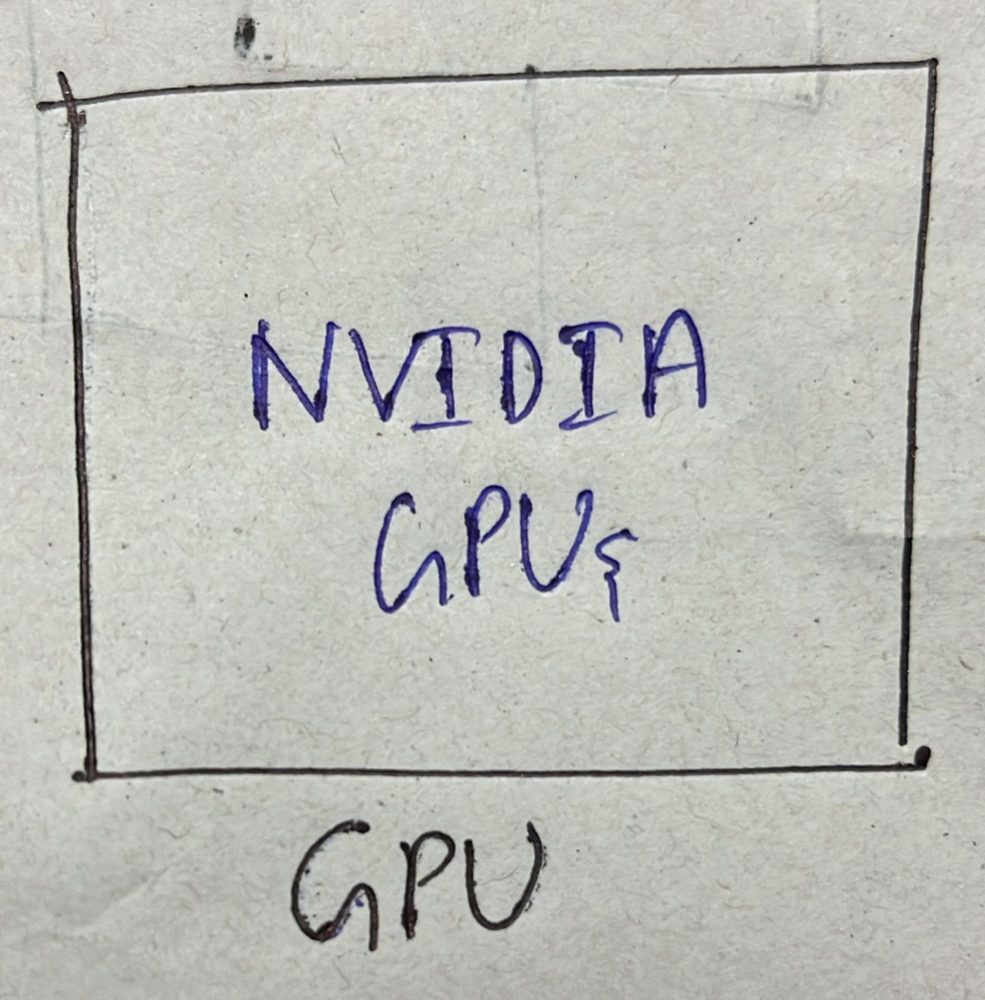

| ANN | CNN | RNN |
|---|---|---|
| ANN stands for Artificial Neural Network | CNN stands for Convolutional Neural Network | RNN stands for Recurrent Neural Network |
| ANN is also called a Feed-Forward Neural Network(FFNN) | It uses a Convolutional layer to extract features from the data | It uses a recurrent layer to process the sequential data |
| Input Layers -> Hidden Layers -> Output Layers | It processes grid-like data | It processes Sequential data |
| Input data is Independent | Input data is independent | Input data is dependent |
| It handles fixed-length inputs | It handles fixed-length inputs | It handles Variable-length inputs |
| ANN is very simple | CNN is less complex | RNN is highly complex |
Example:
|
Example:
|
Example:
|
 |
 |
 |


a = history.history
b = a['loss']
c = a['val_loss']
epochs = range(1, len(b) + 1)
plt.plot(epochs, b, 'bo', label='Training loss')
plt.plot(epochs, c, 'b', label='Validation loss')
plt.title('Graph')
plt.xlabel('Epochs')
plt.ylabel('Loss')
plt.legend()
plt.show()
| NVIDIA GPUs | cloud-based GPUs |
|---|---|
| NVIDIA GPUs are the best GPUs for deep learning | When you don't have an NVIDIA GPU, Cloud-based GPUs are best for deep learning |
| NVIDIA GPUs support frameworks and libraries such as TensorFlow and Keras. | Cloud-based also supports frameworks and libraries such as TensorFlow and Keras. |
| NVIDIA GPUs support CUDA | Cloud-based GPUs also support CUDA |
| It needs an Operating System | It needs an Internet connection |
| NVIDIA GPUs are better when compared to other GPUs | Cloud-based GPUs are better than NVIDIA GPUs |
| High performance and High Throughput when compared to other GPUs | High performance and High Throughput when compared to NVIDIA GPUs |
| High Cost | cost effectiveness |
|  |